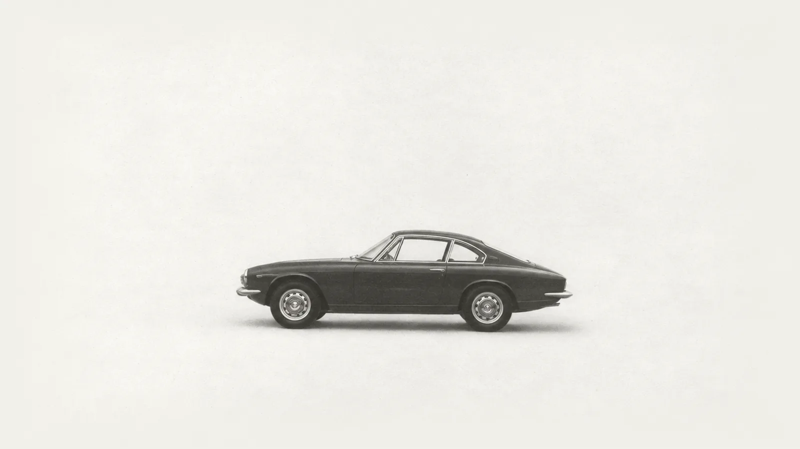
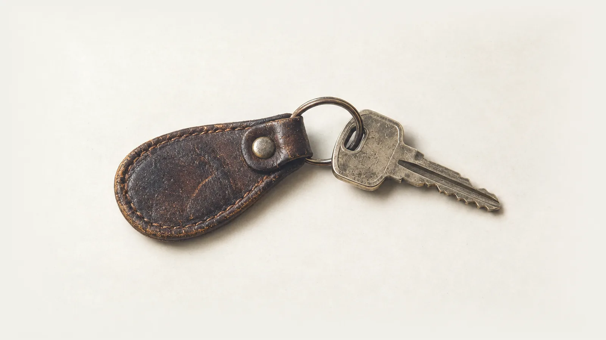
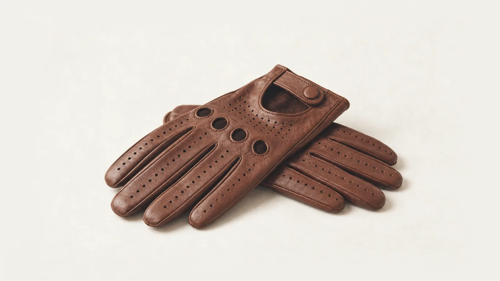

Every road you've driven.
Kaido is an iPhone app that records each drive on its own and draws it on a map, one ink for each car. No account. Free while it's in beta.


Name one drive.
Your car has done 80,000 miles. The odometer counts how far, never where.
You remember a few drives: the first night in it, the canyon road, the trip home. The rest are gone. Kaido keeps the where. Every drive, every road and every town, on one map for each car you own.
Look up a drive.
Every drive lands in a logbook you can search by road, town or place. Try it on a sample: four years around Los Angeles, a year in France and a road trip across Japan.
0mi
Loading the sample drives
Drive. It remembers.
- Add your car. Scan the VIN, or pick the make and model.
- Just drive. Kaido notices when you're driving and records the trip. Nothing to start, nothing to stop.
- Watch the map fill in. New roads, towns, states and countries light up, and each car keeps its own odometer.
- Keep the good ones. Turn any drive into a poster or a short video that draws the route.

Who buys the data? Nobody.
There's nothing to buy. Your drives stay on your iPhone and in your own iCloud. We can't see them.
Read the privacy policy- No account.
- No email, no password, no sign-up. Open the app and drive.
- No ads, no trackers.
- There's no advertising or analytics code in the app.
- Never sold.
- Not to advertisers, not to data brokers, not to insurance companies.
- Friends is optional.
- Join only if you want to. You choose which drives friends see, and you can delete your profile any time.
Questions.
Do I need an account?
No. There's no sign-up. If iCloud is on, your cars and drives follow you to a new iPhone through your own iCloud.
How does it know I'm driving?
Your iPhone's motion sensors notice when you start driving, then GPS records the trip until you park. Set location access to Always so it works with the phone in your pocket.
Can anyone see where I've been?
Only you, unless you join Friends. Friends see your name, cars and totals, plus the drives you choose to share. Exactly what's shared.
What does it cost?
Nothing during the beta. Recording and your map will stay free. A paid upgrade for extras may come later, and you'll never need it to keep your drives.
Is there an Android version?
Not yet. Kaido is iPhone only for now and needs iOS 26.
Does it work outside the US?
Yes. It lights up countries, states and provinces everywhere, US counties, and Japan's prefectures and towns. More answers in Support.
Start your map.
Kaido is in free beta on TestFlight for iPhone. Tap below, install TestFlight if Apple asks, and your first drive starts the map.
Join the free beta